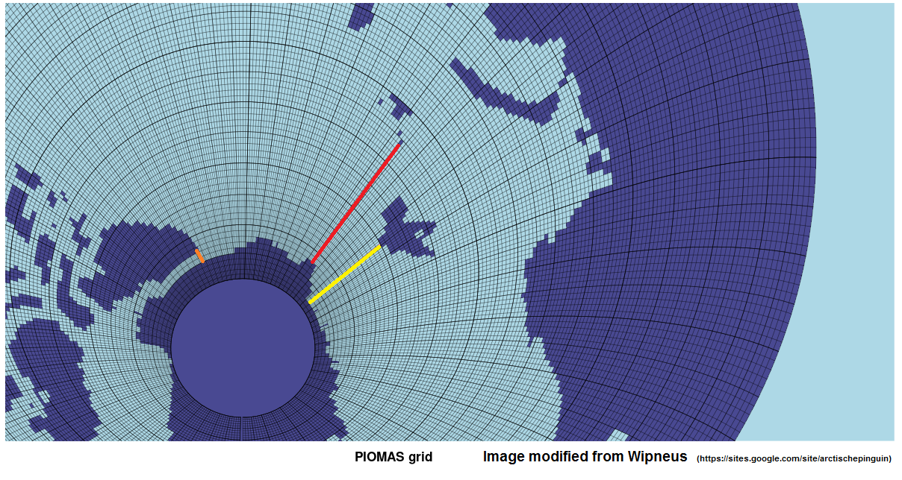
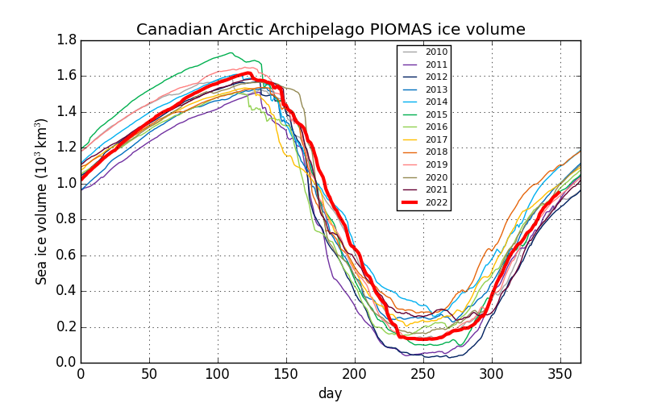

All images and data below are calculated from the PIOMAS gridded sea ice thickness data provided by the Polar Science Center (Zhang et al.)
Sea ice volume spreadsheets
Latest sea ice thickness maps
Sea ice volume graphs

Fram Strait export


Regional sea ice volume graphs


